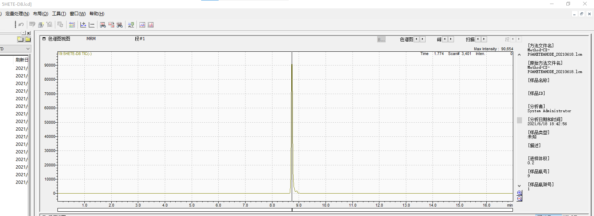
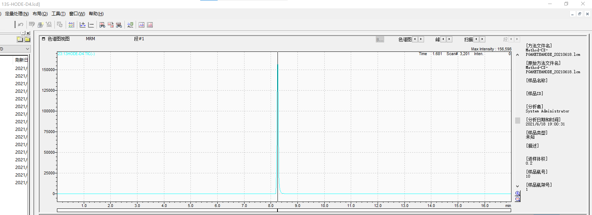

Eicosanoids method
Eicosanoids method
Sample preparation
- 取400μL 样品到2ml EP管
- 加入10μL 内标 (0.5 ng/mL in ethanol), 涡旋
- 用1N HCl调节PH至3.0 (500ul组织研磨液加10ul)
- 1.2mL of Hexane : MTBE (50:50, v/v) into the tube, then vortex for 1min
- Centrifuge 5 minutes at 5000g
- 转移上清至新的2ml tube
- 重复步骤4, 5
- 合并上清液，吹干
- Reconstitute with 50 µl of mobile phase A , vortex, 超声5min,14000g离心取35ul上清至进样瓶
组织样品离心后上清液有脂质出现，转移时要避开
2ml EP管离心后不好吸, 可转移至1.5mlEP管
转移的上清不能有沉淀, 可用20ul枪吸两次
Mobile phase A: Water:Acetonitrile:Formic acid = 63:37:0.02
Mobile phase B: Acetonitrile:Isopropyl alcohol = 50:50
Column: Kinetex 2.6 μm C18, 100 x 2.1 mm
Inject volumn: 5 μl (tissue)
| Method Time (minutes) | Mobile phase A% | Mobile phase B% | Flow Rate (μL/min) |
|---|---|---|---|
| 0.00 | 100 | 0 | 350 |
| 6.00 | 92 | 8 | 350 |
| 6.50 | 45 | 55 | 350 |
| 10.00 | 45 | 55 | 350 |
| 13.00 | 0 | 100 | 350 |
| 14.00 | 0 | 100 | 350 |
| 14.50 | 100 | 0 | 350 |
| 17.00 | 100 | 0 | 350 |

Figure 1. Major enzymatic pathways for the synthesis of arachidonic acid-derived eicosanoids

Figure 2. Representative chromatogram of arachidonic acid-derived eicosanoids in the targeted metabolomic analysis by liquid chromatography – mass spectrometry
| ID # | chemical | 事件号 | RT | m/z |
|---|---|---|---|---|
| 1 | 15d-PGJ2 | 1:MRM(-) | 7.8 | 315.1000>271.1000 |
| 2 | 15d-PGJ2-D4 | 2:MRM(-) | 0.1 | 319.1000>275.1000 |
| 3 | 20HETE | 3:MRM(-) | 8.45 | 319.1500>289.1000 |
| 4 | 20HETE-D6 | 4:MRM(-) | 8.45 | 325.1000>295.1000 |
| 5 | 5,6-EET | 5:MRM(-) | 8.25 | 319.2000>219.1000 |
| 6 | 8,9-EET | 6:MRM(-) | 8.5 | 319.2000>123.2000 |
| 7 | 14,15-EET | 7:MRM(-) | 8.25 | 319.2000>219.2000 |
| 8 | 14,15-EET-D11 | 8:MRM(-) | 0.1 | 330.2000>219.2000 |
| 9 | 15HETE | 9:MRM(-) | 8.45 | 319.1500>219.1000 |
| 10 | 15HETE-D8 | 10:MRM(-) | 0.1 | 327.1500>226.2000 |
| 11 | 12HETE | 11:MRM(-) | 8.45 | 319.2000>179.2000 |
| 12 | 12HETE-D8 | 12:MRM(-) | 8.45 | 327.2000>184.2000 |
| 13 | 11,12-EET | 13:MRM(-) | 8.4 | |
| 14 | 5HETE | 14:MRM(-) | 8.7 | 319.2000>115.2000 |
| 15 | 14,15-DHET | 15:MRM(-) | 7.6 | 337.2000>207.1000 |
| 16 | 11,12-DHET | 16:MRM(-) | 7.7 | 337.2000>167.1000 |
| 17 | 8,9-DHET | 17:MRM(-) | 7.7 | 337.2000>127.1000 |
| 18 | 5,6-DHET | 18:MRM(-) | 8 | 337.2000>145.1000 |
| 19 | 5HETE-D8 | 19:MRM(-) | 0.1 | 327.2000>116.2000 |
| 20 | 5-IPF2A-VI | 20:MRM(-) | 1.69 | 353.1000>115.0000 |
| 21 | AA | 21:MRM(-) | 11.6 | 303.6500>259.2500 |
| 22 | 13HODE | 22:MRM(-) | 8.1 | 295.1000>195.0000 |
| 23 | 13HODE-D4 | 23:MRM(-) | 8.1 | 299.3000>198.2000 |
| 24 | 9HODE | 24:MRM(-) | 8.2 | 295.1010>171.0000 |
| 25 | PGJ2 | 25:MRM(-) | 5.51 | 333.2000>233.1000 |
| 26 | PGE2-D4-2.15 | 26:MRM(-) | 2 | 355.1000>193.0000 |
| 27 | PGD2-D4-2.6 | 27:MRM(-) | 0.1 | 355.1000>275.1000 |
| 28 | PGE2-2.15 | 28:MRM(-) | 2 | 351.1000>271.1000 |
| 29 | 8-ISO-PGF2A | 29:MRM(-) | 1.45 | 353.1000>193.0000 |
| 30 | 8-ISO-PGF2A-D4 | 30:MRM(-) | 1.45 | 357.2000>197.2000 |
| 31 | 8-ISO-PGF1A | 31:MRM(-) | 1.45 | 355.2000>311.2000 |
| 32 | PGF2A | 32:MRM(-) | 1.6 | 353.1000>309.1000 |
| 33 | PGF2A-D4 | 33:MRM(-) | 0.001 | 357.1000>313.3000 |
| 34 | PGFM | 34:MRM(-) | 2.6 | 353.2000>183.2000 |
| 35 | PGI2 | 35:MRM(-) | 0.91 | 369.1000>163.0000 |
| 36 | PGI2-D4 | 36:MRM(-) | 0.1 | 373.2000>249.1000 |
| 37 | LTE4 | 37:MRM(-) | 5.57 | 438.1000>333.0000 |
| 38 | LTC4 | 38:MRM(-) | 5.01 | 624.2000>272.0000 |
| 39 | LTC4-D5 | 39:MRM(-) | 0.1 | 629.2000>272.3000 |
| 40 | LTE4-D5 | 40:MRM(-) | 0.1 | 443.2000>338.2000 |
| 41 | PGFM-D4 | 41:MRM(-) | 2.6 | 357.2000>187.2000 |
| 42 | PGD2-2.61 | 42:MRM(-) | 2.6 | 351.1000>271.1000 |
| 43 | 15D-PGD2 | 43:MRM(-) | 7.3 | 333.1000>271.1200 |
| 44 | LTB4 | 44:MRM(-) | 7.46 | 335.1000>195.0000 |
| 45 | LTB4-D4 | 45:MRM(-) | 0.1 | 339.2000>197.2000 |
| 46 | 11-dehydro-TXB2 | 46:MRM(-) | 2.41 | 367.1000>305.0000 |
| 47 | 11-dehydro-TXB2-D4 | 47:MRM(-) | 0.1 | 371.2000>309.2000 |
| 48 | TXB2 | 48:MRM(-) | 1.3 | 369.2000>169.0000 |
| 49 | TXB2-D4 | 49:MRM(-) | 0.1 | 373.1000>173.2000 |
| 50 | AA-D8 | 50:MRM(-) | 0.1 | 311.6500>267.2500 |
未使用内标
| ID # | chemical | 事件号 | RT | m/z |
|---|---|---|---|---|
| 2 | 15d-PGJ2-D4 | 2:MRM(-) | 0.1 | 319.1000>275.1000 |
| 8 | 14,15-EET-D11 | 8:MRM(-) | 0.1 | 330.2000>219.2000 |
| 10 | 15HETE-D8 | 10:MRM(-) | 0.1 | 327.1500>226.2000 |
| 19 | 5HETE-D8 | 19:MRM(-) | 0.1 | 327.2000>116.2000 |
| 27 | PGD2-D4-2.6 | 27:MRM(-) | 0.1 | 355.1000>275.1000 |
| 33 | PGF2A-D4 | 33:MRM(-) | 0.001 | 357.1000>313.3000 |
| 39 | LTC4-D5 | 39:MRM(-) | 0.1 | 629.2000>272.3000 |
| 40 | LTE4-D5 | 40:MRM(-) | 0.1 | 443.2000>338.2000 |
| 45 | LTB4-D4 | 45:MRM(-) | 0.1 | 339.2000>197.2000 |
| 47 | 11-dehydro-TXB2-D4 | 47:MRM(-) | 0.1 | 371.2000>309.2000 |
| 49 | TXB2-D4 | 49:MRM(-) | 0.1 | 373.1000>173.2000 |
| 50 | AA-D8 | 50:MRM(-) | 0.1 | 311.6500>267.2500 |
| Internal standard | Concentration (ng/μL) |
|---|---|
| 8-ISO-PGF2A-D4 | 0.5 |
| 12HETE-D8 | 0.5 |
| PGE2-D4-2.15 | 0.5 |
| 13HODE-D4 | 0.5 |
| PGFM-D4 | 0.1 |
各内标出峰时间截图






modified version
STDMIX的配制
商品内标均用methanol稀释到500ng/mL
然后等体积混合
最终得到STDMIX, 每种内标的浓度均为100ng/mL
贴壁细胞
- 用2mLEP管收集刮下来的细胞
- 离心去上请, 100μL H2O重悬细胞, 取3μL用于测BCA
- 继续添加300μL H2O
- 加入10μL STDMIX, 涡旋
- 用1N HCl调节PH至3.0 (理论上1N HCl稀释1000倍, pH等于3.0)
- 1.2mL of Hexane : MTBE (50:50, v/v) into the tube, then vortex for 1min
- Centrifuge 5 minutes at 5000g
- 转移上清至新的2ml tube
- re-extraction
- 合并上清液，吹干
- Reconstitute with 50 µl of mobile phase A , vortex, 超声5min,14000g离心取35ul上清至进样瓶